Discipline 02 / 09
Graphics / Drawing
Inspired by emotion
Art and design are my way of exploring how imagination transforms into visual expression. I'm driven by the challenge of turning ideas into forms that communicate, inspire, and connect — while refining my own creativity and sense of detail along the way. From crafting sleek digital interfaces to illustrating dynamic, expressive scenes, I focus on blending emotion with visual precision. I stay curious, inventive, and committed to creating visuals that feel alive and meaningful.
Selected Work
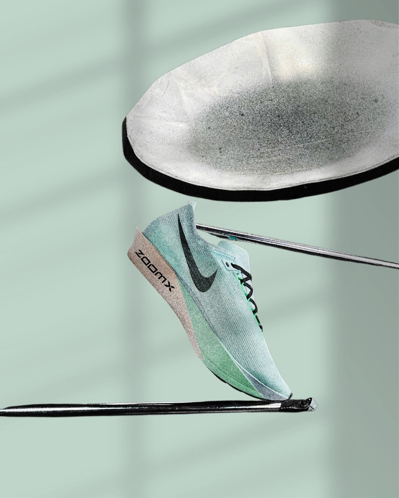
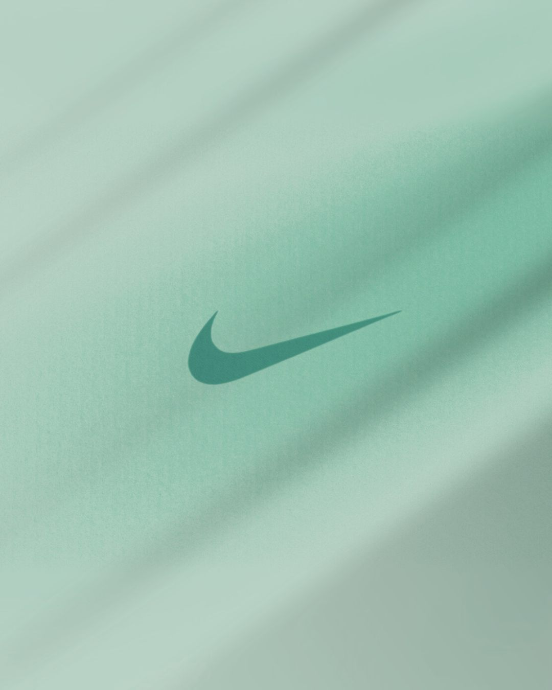
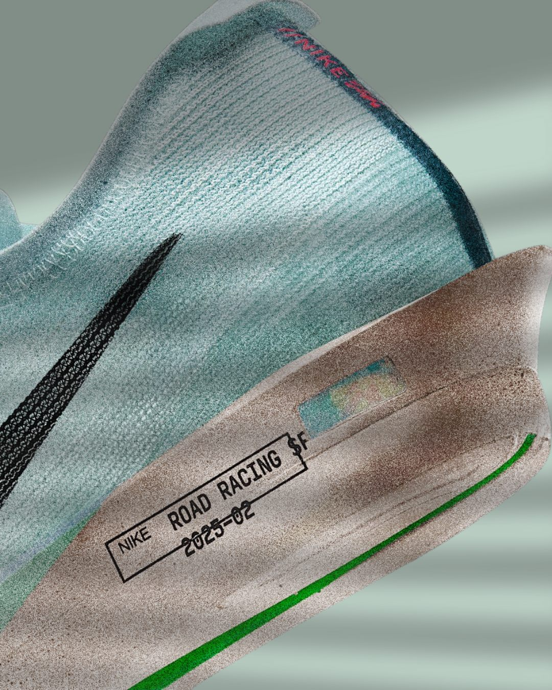
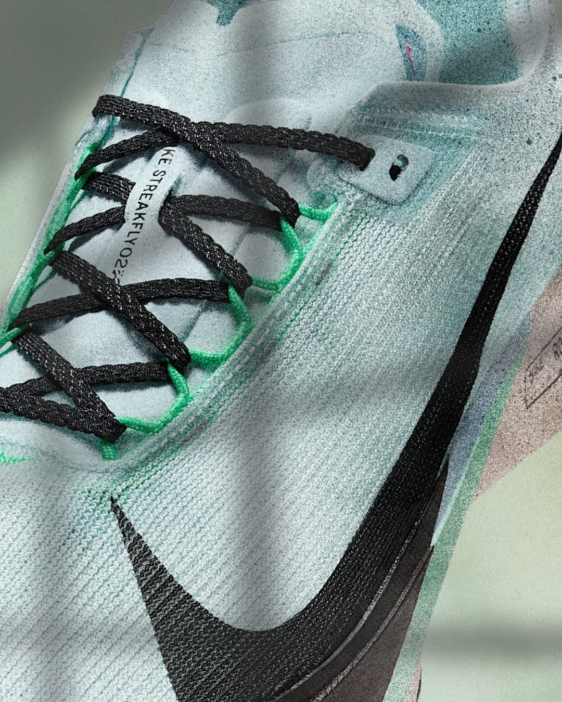
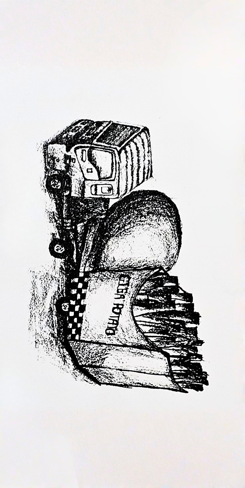
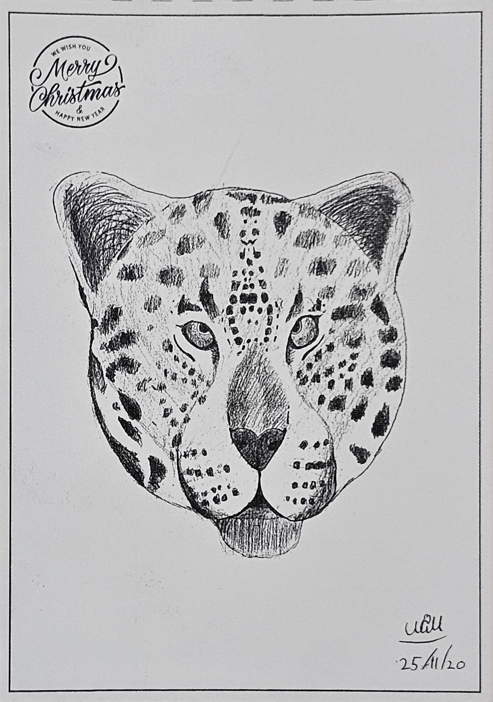
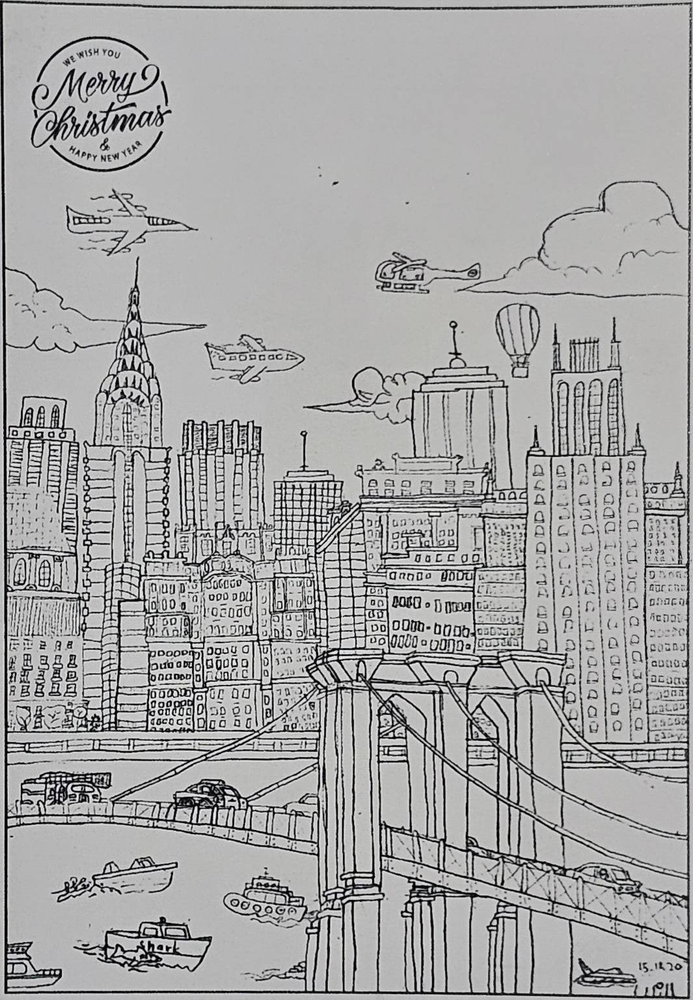
© Kittinat Gerdsri · Shoe design used: Nike ZoomX Streakfly 2
KAO Environment Painting Contest
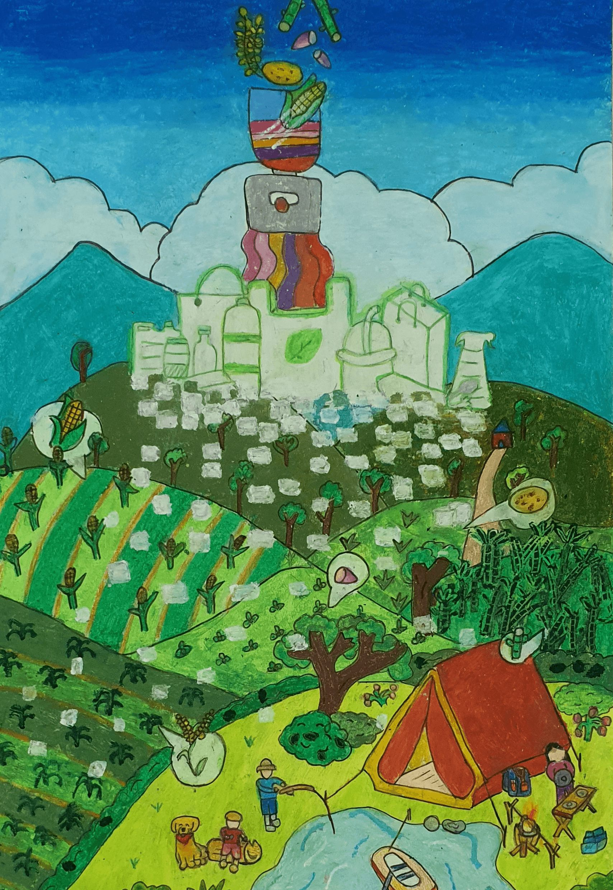
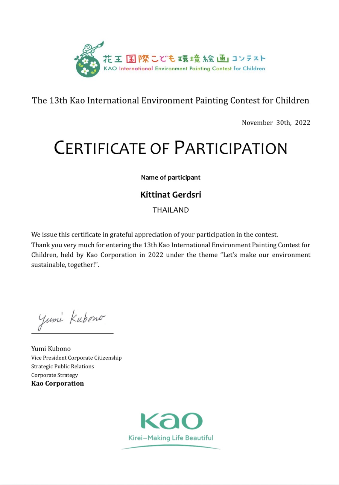
"Let's use bioplastics - 13th KAO International Environment Painting Contest 2022 - Hand-drawn
Toyota Dream Car Art Contest
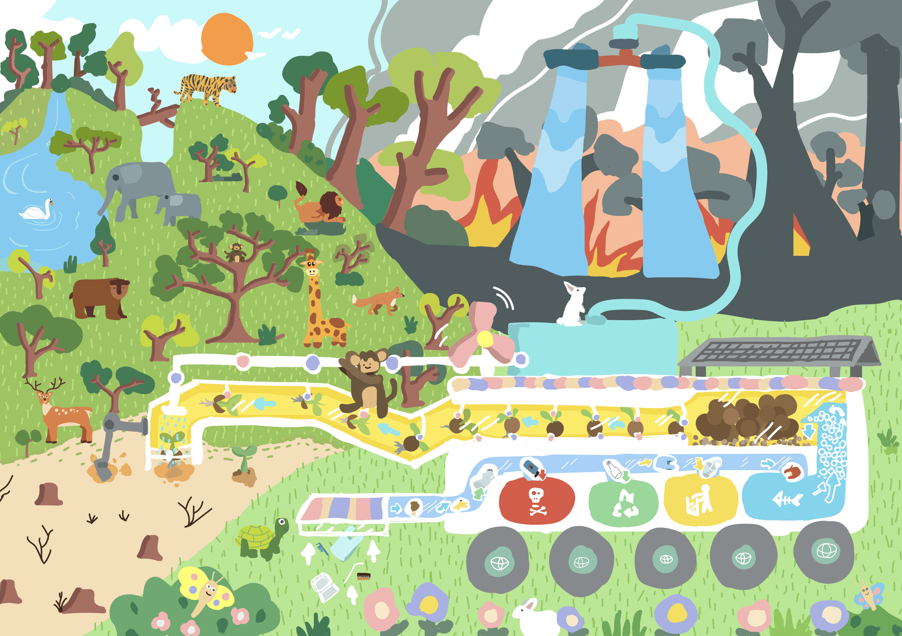
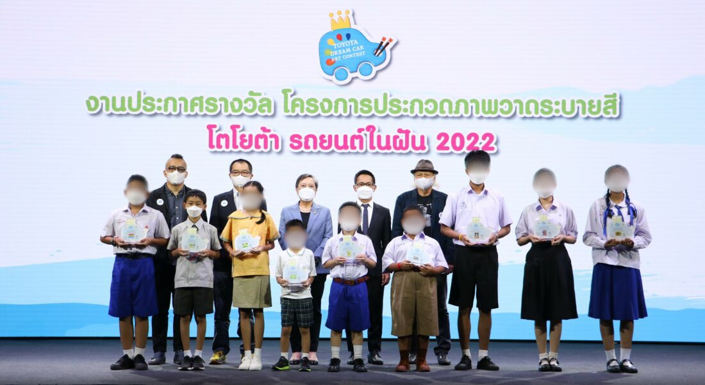
RBTW Machine - This car is driven by solar and wind power. Its big vacuum panel can collect trash and classify them. It turns food waste to fertilizer for new seeds. It can dig holes and plant trees. A big water tank supplies water to trees and help to put out fire. Forest is rebuilt. Animals are back. - TOYOTA Dream Car Art Contest 2022 - Adobe Illustrator